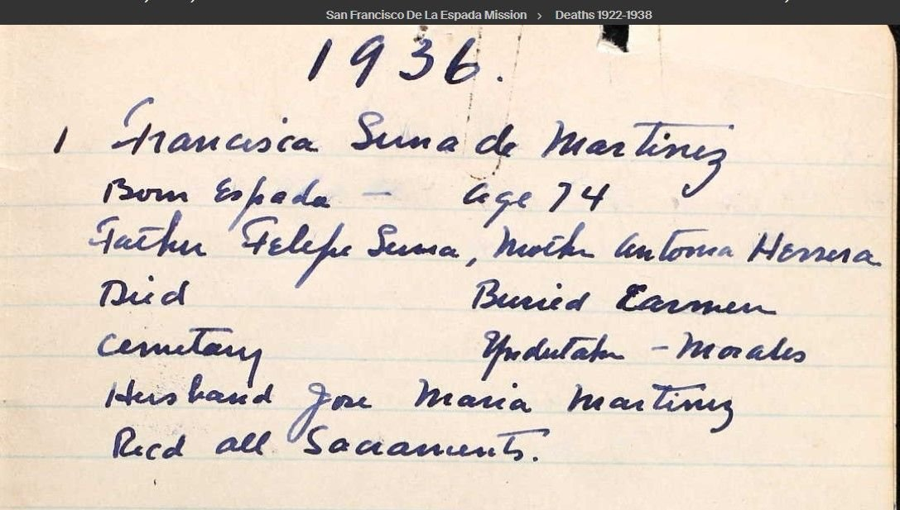
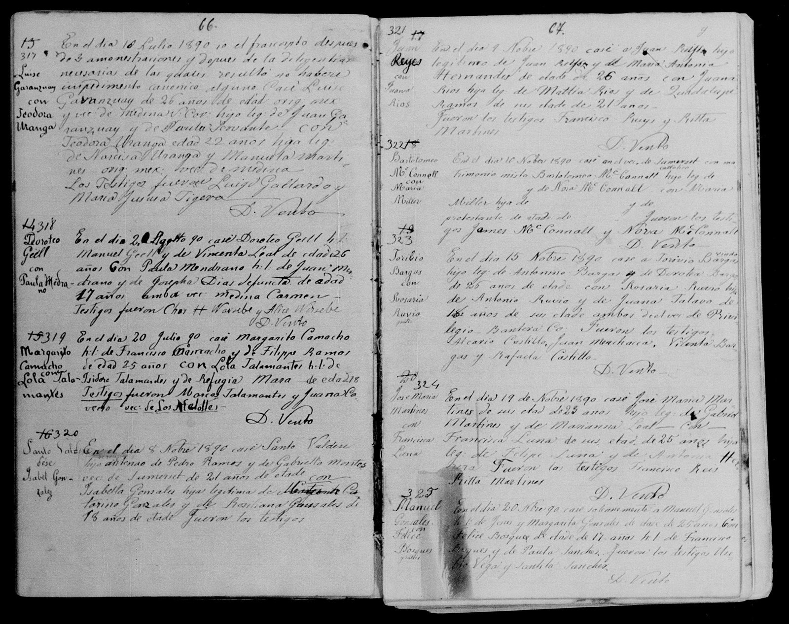
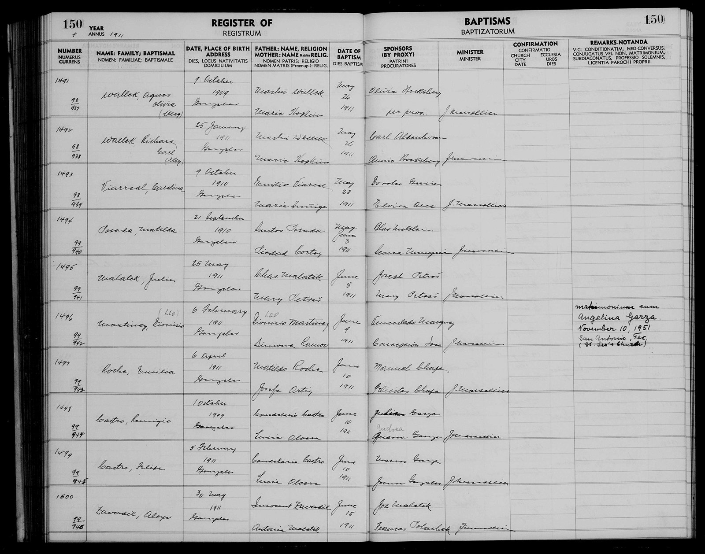
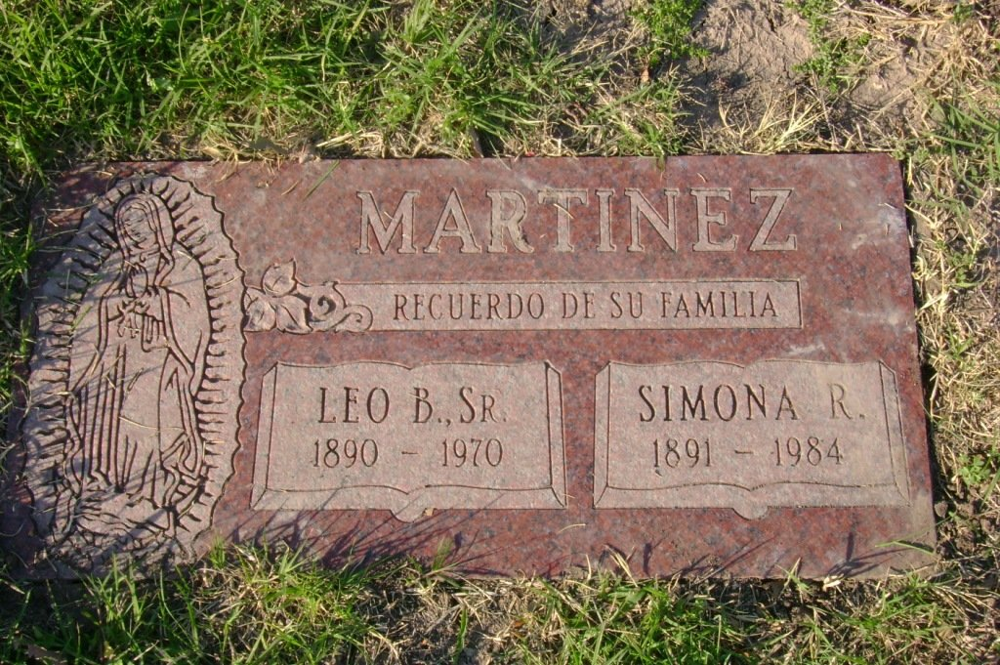

<meta charset="utf-8">
<meta name="viewport" content="width=device-width, initial-scale=1">
<meta name="robots" content="noindex">
<title>Martinez: The Mission Families</title>
<link rel="stylesheet" href="style.css">

<nav>
  <a href="index.html">Home</a>
  <a href="quintanilla.html">Quintanilla</a>
  <a class="here" href="martinez.html">Martinez</a>
  <a href="flynn.html">Flynn</a>
  <a href="maccoll.html">MacColl</a>
</nav>

<main>
<h1>Martinez</h1>
<p class="sub">My mother's mother's line. A Tejano family, rooted for generations in the mission community at Espada on the San Antonio River.</p>

<h2>Start with my great-grandparents</h2>
<p>My grandmother <strong>Eleanor Martinez</strong> was born in San Antonio in 1922, the youngest of nine children of <strong>Leo Baez Martinez Sr.</strong> and <strong>Simona Ramos</strong> <span class="badge proven">Proven</span>. Leo was a construction contractor. He was born April 8, 1890 at a place called Bergs Mill, Texas, and that place name turns out to be the key to the whole line, because Bergs Mill is the little community that grew up around <strong>Mission San Francisco de la Espada</strong>, the southernmost of the old Spanish missions on the San Antonio River.</p>

<p>Quick explainer, because I had to have it explained to me. In the 1700s Spain owned Texas, and to hold it they built walled church outposts, the missions, along the river south of what became San Antonio. The Alamo is the famous one. Espada is another, a few miles downriver, still standing today. The missions weren't built for Spanish people; they were built to bring the local native people in, convert them, and make them Spanish subjects. When the mission system wound down around 1800, the land went to the families of the mission community, and those families stayed and farmed it for the next two hundred years. Spain handed off to Mexico, Mexico to the Republic of Texas, Texas to the United States, and the families stayed put. Those people are called Tejanos, Spanish-speaking Texans, and that's what my grandmother's people were.</p>

<h2>The blank line on the death certificate</h2>
<p>When Leo died in 1970, his son filled out the death certificate. Father: <strong>Jose M. Martinez</strong> <span class="badge proven">Proven</span>. Mother: "Not Available." He didn't know his own grandmother's name. That blank line is what we set out to fill.</p>

<p>The records converged on an answer <span class="badge probable">Probable</span>. Leo's parents were <strong>Jose Maria Martinez</strong>, christened 1869 at the El Carmen church in Losoya, and <strong>Juana Francisca Luna</strong>, born <em>at Mission Espada itself</em> around 1861. Her gravestone stands in El Carmen Cemetery in Losoya, and her memorial records that her funeral was entered in the Mission Espada funeral register, the same mission's books, in 1936. The evidence chain: the couple's church marriage at Losoya on November 19, 1890, which also names Jose Maria's parents, <strong>Gabriel Martinez and Marianna Leal</strong>, a bonus generation; the death records of Leo's brother and sister naming the same couple as parents; and a 1929 sibling marriage record naming them again. Four separate records, one couple.</p>

<figure>
  
  <figcaption>The Mission San Francisco de la Espada death register, first entry of 1936, in the priest's own hand: "Francisca Luna de Martinez. Born Espada. Age 74. Father Felipe Luna, Mother Antonia Herrera. Buried Carmen cemetery. Husband Jose Maria Martinez. Recd all Sacraments." Photo preserved on her memorial page.</figcaption>
</figure>

<p>Read that entry closely, because it does something none of the other records could: it names <em>her</em> parents. <strong>Felipe Luna and Antonia Herrera</strong> <span class="badge proven">Proven</span>, another full generation, straight from the mission's own book, written down by the priest who buried her.</p>

<p>And then we pulled the marriage register itself, from the parish books at Losoya, and got the same answer a second time, written 46 years earlier by a different priest:</p>

<figure>
  
  <figcaption>The Losoya marriage register, entry 324, right-hand page: "En el día 19 de Nobre 1890 casé José María Martínez, de su edad de 23 años, hijo leg. de Gabriel Martínez y de Marianna Leal, con Francisca Luna, de su edad de 25 años, hija leg. de Felipe Luna y de Antonia Herrera." Both sets of parents, one entry. Two independent church records now name Felipe Luna and Antonia Herrera, which makes that generation proven under the two-source rule.</figcaption>
</figure>

<p>Two honest caveats, because the link to Leo gets graded probable and not proven. First, Leo was born seven months <em>before</em> his parents' November 1890 church wedding, so either the wedding legitimized an existing arrival, which was not rare, or Leo's birth year is slightly off. Second, the "Baez" in Leo's name is still unexplained; no Baez has turned up in these families yet. The clinching document exists: the Espada parish baptismal register, which runs from 1703 to 1957 and is on microfilm. One session in the spring 1890 baptisms settles it.</p>

<p>One more find from the church books: Leo's full baptismal name was <strong>Dionisio Leo Martinez</strong>. The family tree had garbled it into "Leonicio" over the years. The records straightened it out, and then the Gonzales parish register handed us the proof in his son's baptism entry:</p>

<figure>
  
  <figcaption>Gonzales baptism register, 1911, entry 1496: "Martinez, Dionisio," with "(Leo)" penciled in above the name, born February 6, 1911, father Dionisio (Leo) Martinez, mother Simona Ramos, baptized June 9, 1911. And in the far-right remarks column, added by a priest forty years later: "matrimonium cum Angelina Garza, November 10, 1951, San Antonio." The parish tracked its children for life.</figcaption>
</figure>

<h2>What this line actually is</h2>
<p>The short version: this is a Tejano family, Spanish-speaking Texans of the San Antonio mission country. Jose Maria Martinez was christened at the Losoya mission church in 1869, Francisca was born at Mission Espada, and the family stayed anchored to that stretch of the river for generations.</p>

<p>How far back that anchor goes, I won't oversell, because the records don't all point the same way. Like a lot of Tejano families, the deep roots are a blend. Francisca's father, <strong>Felipe Luna, turns up in the 1870 census born in Mexico</strong> <span class="badge proven">Proven</span>, so that branch came north in the 1800s rather than descending from the mission's founding families.</p>

<p>But the old-Spanish-Texas side is not just a feeling, it's documented, and it goes about as deep as a Texas family can. Jose Maria Martinez's mother was <strong>Marianna Leal</strong>, and a sourced Bexar County genealogy traces her straight back: Marianna Leal, born in San Antonio in 1841, daughter of <strong>Jose Antonio Abad Leal</strong>, born at San Fernando de Béxar in 1809, descending through five generations to <strong>Juan Leal Goraz, one of the Canary Islander families the Spanish crown shipped from Lanzarote to found San Antonio in 1731</strong> <span class="badge probable">Probable</span>. The record even names her mother, Maria Pilar Romero. So one branch of this family helped found the city, off the boat from the Canary Islands, while another came up from Mexico a century later. That is close to the entire span of Tejano history sitting in one family tree.</p>

<p>And the odds of real indigenous ancestry are high, from both directions. The Texas mission communities were built around converted native families who took Spanish names at baptism, and a Mexican line out of the north carries its own indigenous blood. The paper can't put a number on it, church records stopped recording ethnicity in 1821, but everyone who remembers my grandmother's face has an opinion. A DNA test would settle it.</p>

<figure>
  
  <figcaption>Leo Baez Martinez Sr., 1890-1970, San Fernando Cemetery #2, San Antonio.</figcaption>
</figure>

<p>Leo and Simona raised nine children on Klein Street in San Antonio: six daughters and at least three others including Leo Jr. and a baby, Andrea, lost at birth in 1917. Two daughters are buried at Fort Sam Houston National Cemetery beside soldier husbands. Leo, Simona, my grandmother Eleanor, and much of the family rest together at San Fernando Cemetery #2.</p>

<h2>The paper trail</h2>
<ul class="docs">
  <li><a href="https://www.familysearch.org/ark:/61903/1:1:KSY2-FL1">Leo's 1970 Texas death certificate (index; image behind free FamilySearch login)</a><span class="doc-what">Born 8 Apr 1890, Bergs Mill. Father Jose M. Martinez. Mother "Not Available," the blank we filled.</span></li>
  <li><a href="https://www.familysearch.org/ark:/61903/1:1:F6YW-JPL">Jose Maria Martinez × Francisca Luna, church marriage, Losoya, 19 Nov 1890</a><span class="doc-what">Names his parents Gabriel Martinez and Marianna Leal. Two generations in one record.</span></li>
  <li><a href="https://www.findagrave.com/memorial/250450641/francisca-martinez">Francisca Luna Martinez's grave, El Carmen Cemetery, Losoya</a><span class="doc-what">"Born at Mission La Espada." Funeral recorded in the Espada mission register, 1936.</span></li>
  <li><a href="https://www.familysearch.org/ark:/61903/1:1:F6PG-KVG">Baptism of Dionisio Leo Martinez Jr., Gonzales, Texas, 1911</a><span class="doc-what">Records the father as "Dionisio Leo Martinez," mother Simona Ramos. Leo's real full name.</span></li>
  <li><a href="http://www.txgenwebcounties.com/bexar/Records/Census/Re_Census_1870_L.htm">1870 Bexar County census, Luna households</a><span class="doc-what">Lists Felipe Luna, age 58, born in Mexico, Francisca's father. This is what shows the Luna branch came up from Mexico, not down from the mission's founding families.</span></li>
  <li><a href="https://cida-sa.org/wp-content/uploads/2021/05/Leal-Family-Descendants-Report.pdf">Leal family descendancy, Bexar Genealogy (Steve Gibson)</a><span class="doc-what">A footnoted descendancy of Juan Leal Goraz, Canary Islander founder of San Antonio, 1731. Traces Marianna Leal (b. 1841), wife of Gabriel Martinez, back to the founding families from Lanzarote. The colonial-Texas half of the line.</span></li>
  <li><a href="https://www.findagrave.com/memorial/66623220/leo_baez-martinez">Leo Baez Martinez Sr., San Fernando Cemetery #2</a><span class="doc-what">The family plot cluster: Leo, Simona, and the daughters, linked memorial to memorial.</span></li>
  <li><a href="https://www.findagrave.com/memorial/66623998/simona-martinez">Simona Ramos Martinez, 1891-1984</a><span class="doc-what">My great-grandmother. Her parents are still a complete blank, the next frontier on this line.</span></li>
  <li><a href="https://www.tshaonline.org/handbook/entries/bergs-mill-tx">Bergs Mill, Texas State Historical Association</a><span class="doc-what">What the place was: the community at Mission Espada.</span></li>
  <li><a href="https://www.loc.gov/item/tx0015/">Mission San Francisco de la Espada, Library of Congress</a><span class="doc-what">The mission itself, documented. You can walk it today.</span></li>
</ul>

<h2>Still hunting</h2>
<p>The Espada parish register, baptisms of spring 1890, to prove Leo's mother beyond argument. Jose Maria Martinez's 1937 death certificate, to test the Gabriel and Marianna generation. Felipe Luna and Antonia Herrera in the mission books, the new deepest rung. And the Gonzales County marriage of Leo and Simona around 1909, which would finally name Simona Ramos's parents. Her side is the last fully blank line in my whole tree.</p>

<div class="footer"><p><a href="index.html">Back to all four lines</a></p></div>
</main>
